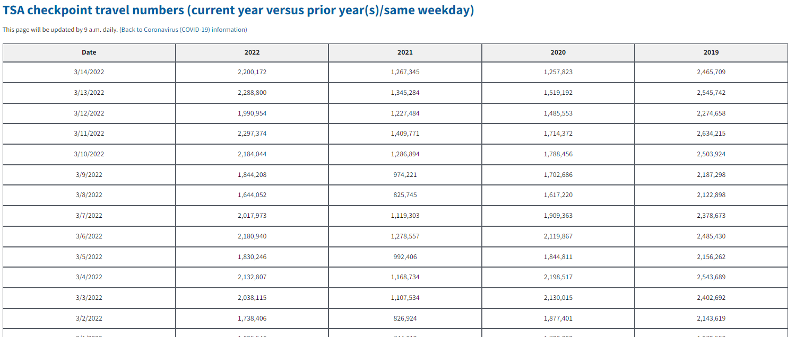

At the start of the Covid-19 outbreak, the U.S. Transportation Security Administration began sharing TSA security checkpoint passenger throughput numbers.
Currently the data looks like this on their site:
We have daily data with columns for the current and past three years. Based on the way this is structured, we can reasonably assume that the data is day-matched to the same day of the week in the prior years.